Ivo
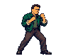
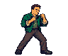
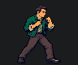
Actual game capture and restored selection

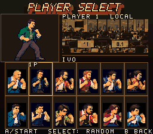
Actual fighting-model pixels for Ivo, Fernando and Cristian. Selection portraits are restored unchanged. The small face crops below are enlarged from the model, not from the selection art. GIF timing is for inspection.




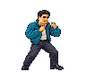
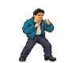
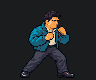
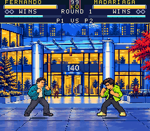
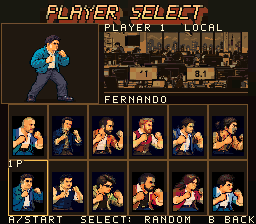
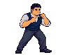
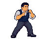

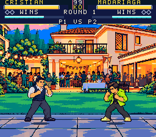
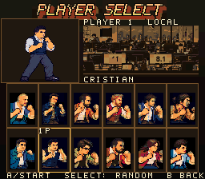